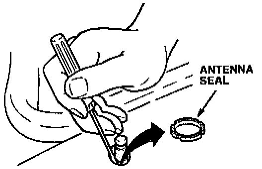
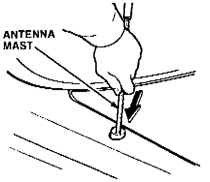
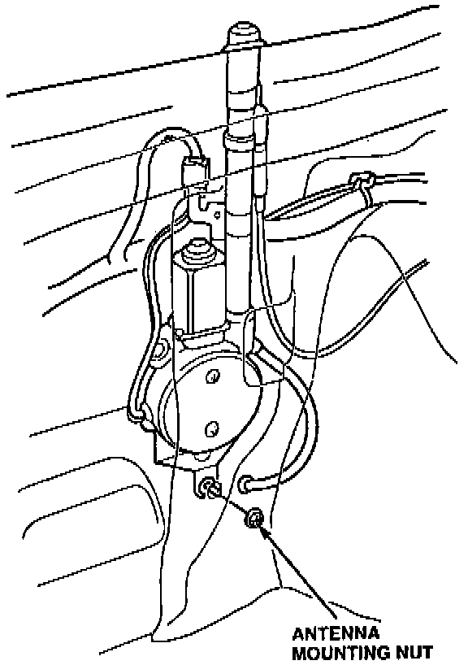
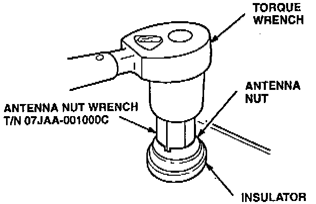

Antenna Mast Kit Replacement
The Antenna Mast Kit includes the mast, an improved antenna nut (0-ring type), and an insulator that provides a seat for the 0-ring.1. Turn the ignition switch ON; then turn the radio on to extend the antenna mast.
2. Pull the antenna mast out of the antenna tube; then discard the antenna mast.

3. Remove the antenna seal, and discard it.

4. Insert the new antenna mast into the antenna tube; then turn the radio off to retract the antenna mast.

5. Loosen the antenna motor mounting nut(s).

6. Reinstall the antenna nut, and tighten it to 2.3 Nm (0.23 kg-m, 20 lb-in).
7. Tighten the antenna motor mounting nut(s).